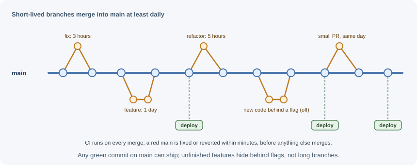
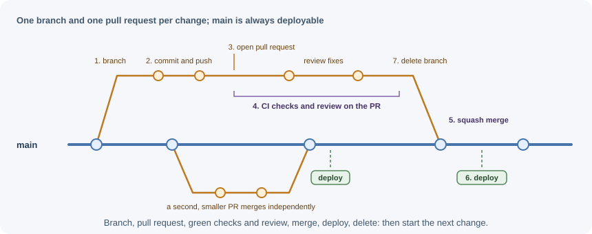
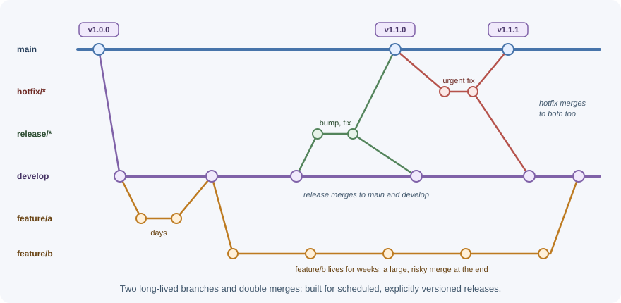
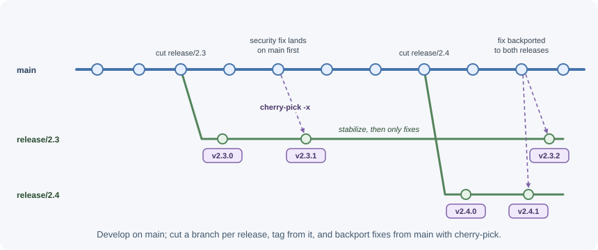
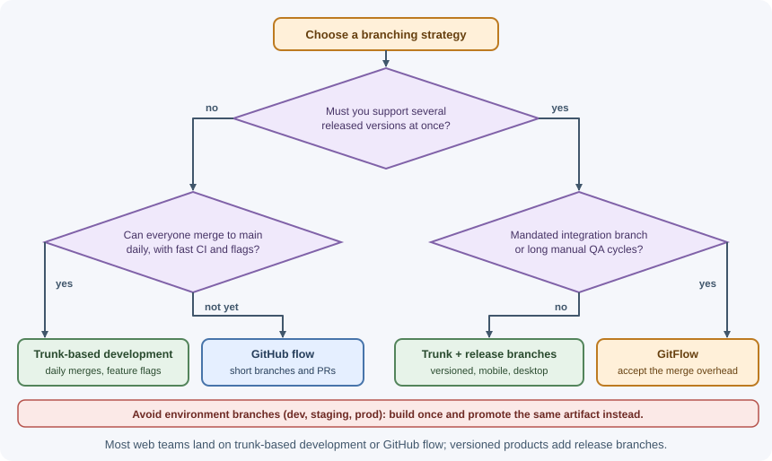

Branching Strategies¶
A branching strategy is a team agreement about where work happens, how long branches live, how changes reach the main line, and how releases and fixes are cut. Git does not enforce any of it; the strategy lives in team habits, branch protection rules, and CI configuration.
This lesson covers trunk-based development with short-lived branches and feature flags, GitHub flow, GitFlow and why many teams moved away from it, release branches for versioned, desktop, and mobile products, the environment-branch anti-pattern, how to choose by team size and release cadence, and how the choice shows up in your CI/CD pipeline and DORA metrics.
Why it matters¶
The branching strategy sets the batch size of integration. When branches live for weeks, every merge is large, conflicts pile up, testing happens late, and releases need stabilization phases and code freezes. When everyone integrates small changes into one main line every day, problems surface while they are small and cheap, and any commit can become a release. DORA's research links these practices directly to delivery performance: the strategy you pick influences how fast changes reach users and how often releases fail. It also determines how simple your CI triggers, deployment pipelines, and hotfix process can be.
Real-world usage¶
- DORA research. DORA's trunk-based development capability reports that teams achieve higher delivery and operational performance when they have three or fewer active branches, merge branches to trunk at least once a day, and have no code freezes or integration phases. It calls trunk-based development a required practice for continuous integration.
- GitFlow's author. Vincent Driessen's 2010 post A successful Git branching model defined GitFlow. In a 2020 "note of reflection" at the top of the same post he recommends that teams doing continuous delivery of web apps adopt a much simpler workflow such as GitHub flow, and keep GitFlow for explicitly versioned software or when several versions must be supported in the wild.
- GitHub flow. GitHub documents GitHub flow as a lightweight, branch-based workflow: create a branch, make changes, open a pull request, address review comments, merge, and delete the branch.
- Martin Fowler's patterns catalogue. Patterns for Managing Source Code Branches describes mainline, healthy branch, release branch, environment branch, and integration frequency as named patterns, with the trade-offs that explain why high-frequency integration usually wins.
Popular tools and providers: GitHub and GitLab branch protection and rulesets, merge queues, feature flag services (LaunchDarkly, Unleash, Flagsmith) and the vendor-neutral OpenFeature API, and release automation such as release-please and semantic-release.
How it works¶
What a strategy decides¶
| Question | Trunk-based | GitHub flow | GitFlow | Release branches |
|---|---|---|---|---|
| Where does daily work land? | main |
main via PRs |
develop |
main |
| How long do work branches live? | Hours to 1-2 days | Days | Days to weeks | Hours to days |
| Long-lived branches | main only |
main only |
main and develop |
main plus one per supported release |
| How is a release made? | Tag or deploy any green main commit |
Deploy main after merge |
release/* branch, merged to main and tagged |
Cut release/x.y, stabilize, tag |
| How does a hotfix ship? | Fix on main, deploy |
Fix on main via PR, deploy |
hotfix/* from main, merged to main and develop |
Fix on main, cherry-pick to release branch |
| Unfinished features | Hidden behind feature flags | Kept on the branch, or flags | Kept on the feature branch | Hidden behind flags |
Trunk-based development¶
In trunk-based development (TBD), every developer integrates into one
shared branch, the trunk (main), at least daily. Small teams may
commit to main directly after local tests; most teams use very
short-lived branches and pull requests that merge within a day. CI runs on
every change, and keeping main green is everyone's first priority: if a
merge breaks the build, it is fixed or reverted within minutes.

Large features still ship in small slices, using two techniques:
- Feature flags (toggles): the code for an unfinished feature is merged but switched off, so it is deployed "dark" and turned on later, possibly for a percentage of users. Deploying code and releasing a feature become separate decisions. Flags carry a cost: every flag is a branch in the code that must be tested and later removed. See feature flags and progressive delivery.
- Branch by abstraction: to replace a component (say, the TaskFlow notification sender), first introduce an interface in front of the old implementation, build the new implementation behind it in small merged steps, switch callers over, then delete the old code. The main line stays releasable throughout.
TBD needs a solid safety net: fast automated tests, quick code review,
and the discipline to keep changes small. Without that net, merging to
main daily just spreads breakage faster.
GitHub flow¶
GitHub flow is a simple branch-per-change workflow built around pull
requests. Its one rule is that main is always deployable.

- Create a descriptively named branch from
main. - Commit and push.
- Open a pull request, early as a draft if you want feedback.
- CI runs and teammates review; push fixes to the same branch.
- Merge into
mainonce checks pass and reviewers approve. - Deploy
main(usually automatically) and delete the branch.
GitHub flow and trunk-based development converge when branches are short: a team that merges small PRs several times a day is doing trunk-based development with pull requests. The difference shows when branches start living for a week; GitHub flow tolerates that, TBD does not.
GitFlow¶
GitFlow uses two long-lived branches and three kinds of supporting branches:
| Branch | Branches from | Merges into | Purpose |
|---|---|---|---|
main |
(permanent) | (permanent) | Released code only; every commit is a tagged release |
develop |
main |
(permanent) | Integration branch for the next release |
feature/* |
develop |
develop |
One feature, often long-lived |
release/* |
develop |
main and develop |
Stabilize, bump version, release |
hotfix/* |
main |
main and develop |
Urgent fix to the released version |

GitFlow brought order to teams that shipped boxed or scheduled releases, and it still fits software that is explicitly versioned with long QA cycles. Many web teams moved away from it because:
- Integration is delayed. Work sits on feature branches and on
develop;mainsees it only at release time, so problems surface late and in large batches. - Merges multiply. Release and hotfix branches must be merged twice;
a forgotten merge back to
developmakes a fix silently disappear from the next release. - It fights continuous delivery. If every merge to
maincan be deployed, a separatedevelopand release branches add ceremony without adding safety. - History is complex, which makes bisecting and reasoning about "what is in production" harder.
Release branches for versioned products¶
Desktop applications, mobile apps, on-premises products, SDKs, and libraries often have several versions in use at once, and mobile builds pass through app store review before reaching users. These teams usually combine trunk-based development with release branches:

- Development always happens on
main. - At release time, cut
release/2.3from a greenmaincommit. Only stabilization fixes go there; new features keep landing onmain. - Fixes follow upstream first: land on
main, then cherry-pick to each supported release branch (git cherry-pick -x). Fixing only the release branch guarantees the bug returns in the next release. - Every shipped build is a tag on the release branch (
v2.3.0,v2.3.1). - Release branches are never merged back into
main; they are deleted or archived when the version leaves support.
The release-branch process for desktop and mobile apps continues in releasing desktop and mobile apps.
Environment branches: an anti-pattern¶
Some teams map branches to environments: dev, staging, and prod,
and "deploy" by merging from one to the next. This looks tidy but causes
problems:
- Drift. The branches diverge through hotfixes, reverts, and partial merges, so what was tested in staging is not what reaches production.
- Rebuilds per environment. Each branch builds its own artifact, so production runs a binary that was never tested.
- Merge noise and conflicts between branches that should contain the same code.
- Configuration in code. Environment differences end up as code differences on branches instead of configuration.
The fix is to build once from main, then promote the same artifact
through environments with environment-specific configuration injected at
deploy time. See artifacts and environment promotion
and environments and promotion.
Choosing by team size and release cadence¶

| Context | Good fit | Why |
|---|---|---|
| 1-5 developers, web service, deploy on merge | Trunk-based (direct commits or tiny PRs) | Minimal ceremony; review by pairing or quick PRs |
| 5-50 developers, SaaS, continuous deployment | GitHub flow trending to trunk-based, with a merge queue | PRs give review and checks; short branches keep integration daily |
| Hundreds of developers, monorepo | Trunk-based with merge queues, flags, and strong CI | Only constant integration scales; long branches would never merge |
| Mobile or desktop app, weekly or monthly releases | Trunk + release branches | Store review and installed versions need stable release lines |
| Library or SDK with LTS versions | Trunk + release branches per major version | Security fixes must reach older versions |
| Regulated release trains with long manual QA | GitFlow or release branches | The process requires a stabilization branch; accept the cost |
| Open source with outside contributors | GitHub flow from forks | PRs from forks are the contribution model |
How strategy affects CI/CD and DORA metrics¶
Four of DORA's five delivery metrics (deployment frequency, change lead time, change fail rate, and failed deployment recovery time; see continuous integration fundamentals and measuring delivery performance) respond directly to branching:
- Change lead time includes the time a commit waits on a branch. A
commit that waits on
developfor a two-week release cycle has a lead time of weeks, however fast the pipeline is. - Deployment frequency is capped by how often releasable code reaches the release branch. Trunk-based teams can deploy every merge.
- Change fail rate usually improves with small batches: a 50-line change is easier to review, test, and diagnose than a 5,000-line release merge.
- Recovery time improves when a fix travels the normal path (PR to
mainto deploy) in minutes, instead of a special hotfix process.
The strategy also shapes the pipeline itself: which branches trigger CI,
which trigger deployments, whether a merge queue is needed to keep main
green, and whether artifacts are promoted from main or rebuilt from
several long-lived branches.
When to use and when not to use¶
| Strategy | Use when | Avoid when |
|---|---|---|
| Trunk-based development | One production version, fast CI, team comfortable with flags and small changes | Tests are slow or flaky and reviews take days (fix those first) |
| GitHub flow | Most web teams and open source; PR review is valued | Branches routinely live for weeks; you need parallel supported versions |
| GitFlow | Explicitly versioned software with scheduled releases and long QA | Continuous delivery of a web app |
| Release branches | Several versions supported at once, app store releases, LTS | A single always-current web service (adds unneeded branches) |
| Environment branches | Never as a deployment mechanism | Always: promote artifacts instead |
Practical examples¶
A minimal feature flag in TaskFlow API¶
Merge the due-dates feature to main while it is unfinished, turned on
for a percentage of users through configuration:
// src/flags.js: minimal percentage-based feature flags
import { createHash } from "node:crypto";
// Percent of users (0-100) who get each feature, from configuration
const FLAGS = {
taskDueDates: Number(process.env.FLAG_TASK_DUE_DATES_PERCENT ?? 0),
};
// Stable bucket 0-99 for a user and flag, so a user always gets the same answer
function bucket(flag, userId) {
const digest = createHash("sha256").update(`${flag}:${userId}`).digest();
return digest.readUInt32BE(0) % 100;
}
export function isEnabled(flag, userId) {
const percent = FLAGS[flag] ?? 0;
if (percent >= 100) return true;
if (percent <= 0 || !userId) return false;
return bucket(flag, userId) < percent;
}
// src/routes/tasks.js (excerpt)
import { isEnabled } from "../flags.js";
router.post("/", async (req, res, next) => {
try {
const task = { title: req.body.title, ownerId: req.user.id };
if (isEnabled("taskDueDates", req.user.id) && req.body.dueDate) {
task.dueDate = new Date(req.body.dueDate); // new behavior, dark by default
}
const created = await req.app.locals.db.collection("tasks").insertOne(task);
res.status(201).json({ id: created.insertedId, ...task });
} catch (err) {
next(err);
}
});
With FLAG_TASK_DUE_DATES_PERCENT=0 the code is deployed but inactive;
raise it to 10, then 100, then delete the flag and the old path. Teams
with many flags use a flag service or the OpenFeature SDK instead of
environment variables, so flags change without a redeploy.
CI triggers for trunk-based development with release branches¶
# .github/workflows/ci.yml (trigger section)
on:
pull_request:
branches: [main, "release/**"] # PRs into main or any release branch
push:
branches: [main, "release/**"] # every merge is built and tested
tags: ["v*"] # version tags trigger the release job
There is no develop, staging, or prod branch to trigger on: the
pipeline builds main once and promotes the artifact, while release
branches build only the versions they ship. Pipelines are covered in
pipeline design.
Cutting and patching a release branch¶
# Cut release/2.3 from a known-green commit on main
git switch main && git pull --ff-only
git switch -c release/2.3
git push -u origin release/2.3
git tag -a v2.3.0 -m "TaskFlow 2.3.0" && git push origin v2.3.0
# Later: a fix merged on main (upstream first) is backported
git switch release/2.3 && git pull --ff-only
git cherry-pick -x 4f9e2c1
git push
git tag -a v2.3.1 -m "TaskFlow 2.3.1" && git push origin v2.3.1
GitFlow with plain Git commands¶
If your process requires GitFlow, you do not need special tooling:
# start a feature
git switch develop && git switch -c feature/task-labels
# finish it (usually through a PR into develop)
git switch develop && git merge --no-ff feature/task-labels
# cut and finish a release
git switch -c release/1.1 develop
# ...bump version, fix bugs...
git switch main && git merge --no-ff release/1.1 && git tag -a v1.1.0 -m "1.1.0"
git switch develop && git merge --no-ff release/1.1 # the merge teams forget
git branch -d release/1.1
# hotfix from main
git switch -c hotfix/1.1.1 main
# ...fix...
git switch main && git merge --no-ff hotfix/1.1.1 && git tag -a v1.1.1 -m "1.1.1"
git switch develop && git merge --no-ff hotfix/1.1.1
Migrating from GitFlow to trunk-based development¶
- Make
mainthe default branch and the merge target for new PRs; stop creating new feature branches fromdevelop. - Merge
developintomainone last time, then archivedevelop. - Introduce feature flags for work that cannot ship yet.
- Speed up CI until a PR gets a result in about 10 minutes, and fix or quarantine flaky tests.
- Set a branch age limit (for example, two days) and track it.
- Deploy from
mainautomatically to staging, then to production with an approval, and keep release branches only if you support multiple versions.
Best practices¶
- Keep work branches short-lived: merge at least daily where possible.
- Keep
mainreleasable at all times; treat a redmainas a stop-the-line event. - Use feature flags or branch by abstraction instead of long-lived feature branches, and remove flags once rolled out.
- Land fixes upstream first, then backport to release branches with
cherry-pick -x. - Never use branches to represent environments; promote one artifact.
- Protect long-lived branches (no force pushes, required reviews and checks), as covered in pull requests and code review.
- Write the strategy down in
CONTRIBUTING.md, and encode it in branch protection and CI triggers so the tools enforce it.
In production¶
- The week before each release is "merge hell". Detect: conflict counts and failed builds spike before release dates; release branches need days of stabilization. Cause: long-lived feature branches integrating late. Fix: move to short-lived branches with daily integration and hide unfinished work behind flags.
- A bug fixed in a hotfix reappears in the next release.
Detect: the same issue is reopened after the next scheduled release;
git branch --contains <fix-sha>shows the fix is not ondevelopormain. Cause: a hotfix or release branch was not merged back, or a fix was made only on a release branch. Fix: upstream first (fix onmain, then cherry-pick), and automate the merge-back check in CI. - Staging passed, production failed with the "same" code.
Detect:
git diff staging prodbetween environment branches is not empty, or the image digests differ. Cause: environment branches drifted, or each environment rebuilt its own artifact. Fix: delete environment branches; build once and promote the same artifact by digest. mainis red for hours and nobody can merge. Detect: the main branch status check stays failed; PRs queue up. Cause: PRs passed against an oldermainand broke when combined. Fix: revert the breaking merge immediately, then require branches to be up to date or adopt a merge queue.- Lead time is measured in weeks despite a 10-minute pipeline.
Detect: DORA change lead time far exceeds pipeline duration; commits
wait on
developor release branches. Cause: batching in the branching model. Fix: deploy frommaincontinuously; keep release branches only for genuinely versioned products. - Feature flags pile up and nobody knows which are safe to remove. Detect: dozens of flags permanently at 100% or 0%. Cause: no removal step in the process. Fix: give each flag an owner and an expiry date, and add flag removal to the definition of done.
Important terminology¶
- Trunk / mainline: The single shared branch everyone integrates into,
usually
main. - Trunk-based development: Integrating small changes into trunk at least daily, with short-lived branches or direct commits.
- Short-lived branch: A branch merged within about a day.
- Feature flag (toggle): Runtime configuration that turns a code path on or off without a deploy.
- Dark launch: Deploying code that is present but not active for users.
- Branch by abstraction: Replacing a component behind an interface in small, always-releasable steps.
- GitHub flow: Branch, pull request, review, merge, deploy;
mainis always deployable. - GitFlow: A model with
main,develop, and feature, release, and hotfix branches. - Release branch: A branch cut for one version, receiving only fixes.
- Upstream first: Fixing on
mainbefore backporting to release branches. - Environment branch: A branch per deployment environment; an anti-pattern for deployment.
- Code freeze: A period when no new changes may merge; a symptom of late integration.
Common mistakes and misconceptions¶
- Believing GitFlow is "the standard". Its own author recommends simpler flows for continuously delivered software.
- Calling a workflow trunk-based while branches live for weeks.
- Merging unfinished features without a flag, or leaving flags in the code forever.
- Fixing a bug only on a release branch.
- Using branches to model environments and rebuilding per environment.
- Assuming direct commits to
mainmean no review; trunk-based teams review through pairing or very fast PRs. - Adopting trunk-based development without fast, reliable tests, then
blaming the strategy for a broken
main.
Revision questions¶
- What three practices does DORA associate with trunk-based development and higher delivery performance?
- How do feature flags and branch by abstraction let a large feature ship without a long-lived branch?
- List the five branch types in GitFlow and where release and hotfix branches merge. Why is a forgotten merge dangerous?
- Why does Vincent Driessen recommend GitHub flow for continuously delivered web apps?
- A commit merges into
developon a Tuesday. Release branches are cut every second Thursday (the next cut is 9 days later), QA takes 5 days, and the production deploy happens 5 days after QA ends. Estimate the change lead time, and compare it with trunk-based development deploying about 1 hour after merge. (Roughly 19 days versus 1 hour.) - When are release branches the right choice, and what does "upstream first" mean for fixes?
- Explain three problems with environment branches and the alternative.
- How does the branching strategy influence each of the four DORA delivery metrics discussed above?
Further learning¶
- DORA: Trunk-based development
- Trunk Based Development (site) and its branch for release page
- GitHub Docs: GitHub flow
- Martin Fowler: Patterns for Managing Source Code Branches
- Martin Fowler: Feature Toggles (Pete Hodgson)
- A successful Git branching model (GitFlow, with the 2020 note)
- Next: pull requests and code review. Back to the Git and GitHub overview.